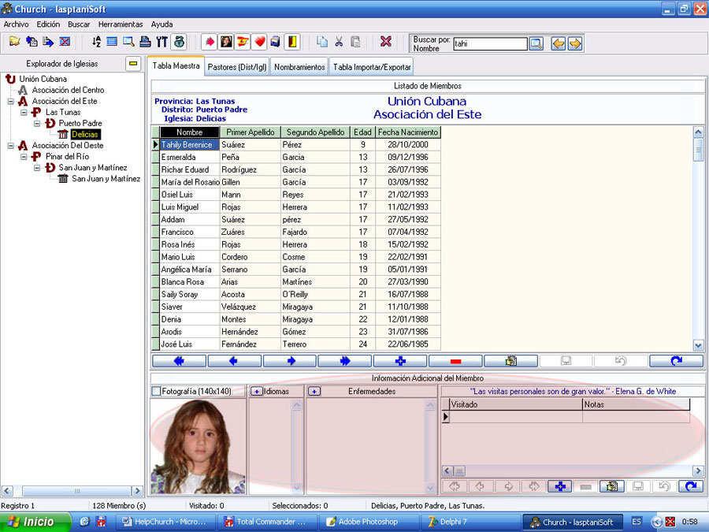
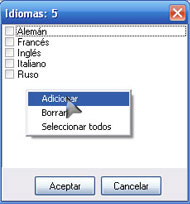

Panel de Información Adicional
La figura 31 muestra en un óvalo rosado el Panel de Información Adicional.

Figura 31. El Panel de Información Adicional.
Aunque solo se observan cuatro paneles (Fotografía, Idiomas, Enfermedades, y el Panel de Visitas), hay otro panel (Otra Información) que alterna con el de visitas. Cuando se oculta uno, se muestra el otro.
El panel Fotografía: Es utilizado para almacenar la foto del miembro. Con solo hacer doble clic sobre el área de la foto logrará visualizar la ventana desde donde añadirá la foto, esta debe estar en formato de Imagen JPEG (*.jpg; *.jpeg), y para un mejor manejo la foto debe tener una medida de 140x140 píxeles. Debe tener presente que el uso de fotos en los miembros aumenta el tamaño de la base de datos, y disminuye la velocidad de búsqueda en dependencia del ordenador. Las fotos se eliminan con la tecla Suprimir/Delete/Del.
El panel Idiomas: Es el encargado de llevar la lista de los idiomas que conoce el miembro. Al hacer clic sobre el botón de adición (+) aparecerá la ventana que por defecto tiene algunos idiomas, usted podrá marcar los idiomas correspondientes, y además añadir o borrar idiomas, la figura 32 muestra la ventana de añadir idiomas después de que el usuario accionó el botón secundario del ratón sobre la misma.

Figura 32. Ventana de añadir idiomas (con clic derecho sobre la ventana).
El panel Enfermedades: Lo mismo que el de idiomas, pero en este caso para enfermedades de los miembros.
Nota: Es importante señalar que tanto en el panel de Idiomas como en el de Enfermedades contienen datos por defecto, cuando borre cualquier idioma o enfermedad, esto se borrará también de la base de datos, y por ejemplo la tabla de enfermedades contiene 91 enfermedades diferentes que usted puede ir acomodando de acuerdo a las necesidades de su iglesia. No importa la cantidad de idiomas o enfermedades que aparezcan en las ventanas respectivas, usted solo marque la que corresponda con el miembro seleccionado.
El panel de Visitas: Lleva el recuento (en una rejilla de datos) con las notas de las visitas que usted ha efectuado a cada miembro en particular, con la fecha cuando se efectuó dicha visita. Es importante que mantenga actualizado este apartado, de esta manera sabrá como moverse en los distintos recorridos por el campo.
El panel Otra Información…: Será usado para cualquier dato o nota que le haga falta tener del miembro de iglesia seleccionado, puede llevar si quiere hasta un historial del miembro, por ejemplo, <<cuando este miembro llegó a nuestra iglesia era así…., ahora es un especialista en los escritos White, en tal fecha organizó una actividad que trajo como resultado…, etc. >>, esto por supuesto sería muy útil también para el trabajo que un secretario podría realizar (ver Notas sobre la edición).